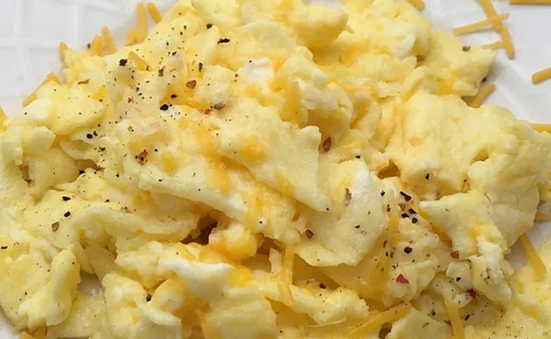

Home
Best Scrambled Eggs
By mimo1099

Description
I've been tweaking my recipe for a while now and I've finally found the best scrambled eggs ever! My friends and family love it, and I make it almost once a week before school.
This recipe can be found in allrecipes.com
Ingredients
- 2 eggs
- 2 tablespoons sliced Cheddar chesse
- 2 thin slices ham (optional)
- 1 teaspoon heavy whipping cream
- 1/2 teaspoon butter
Steps
- Whisk eggs together in a small bowl until smooth. Mix in Cheddar cheese, ham, and heavy cream.
- Melt butter in a skillet over medium heat. Pour in egg mixture; cook and stir until set but still moist, 3 to 5 minutes.